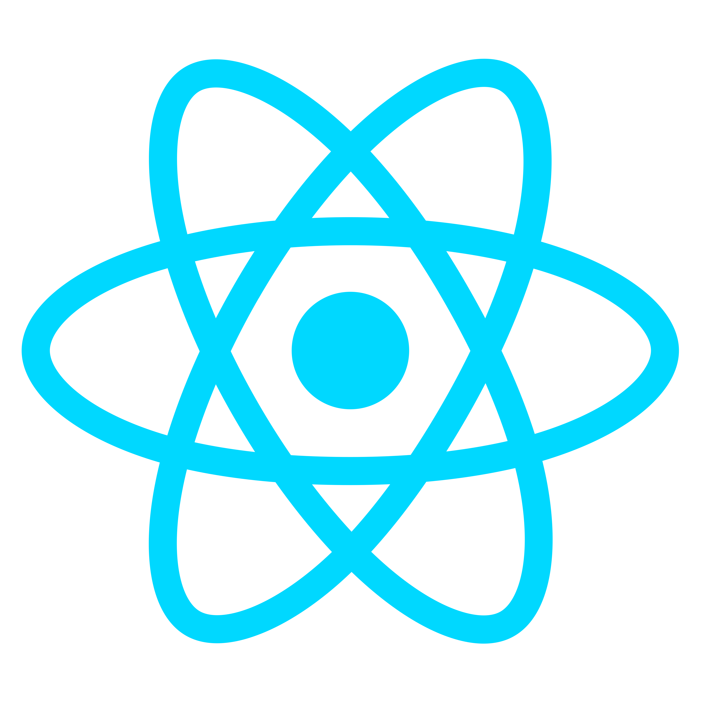
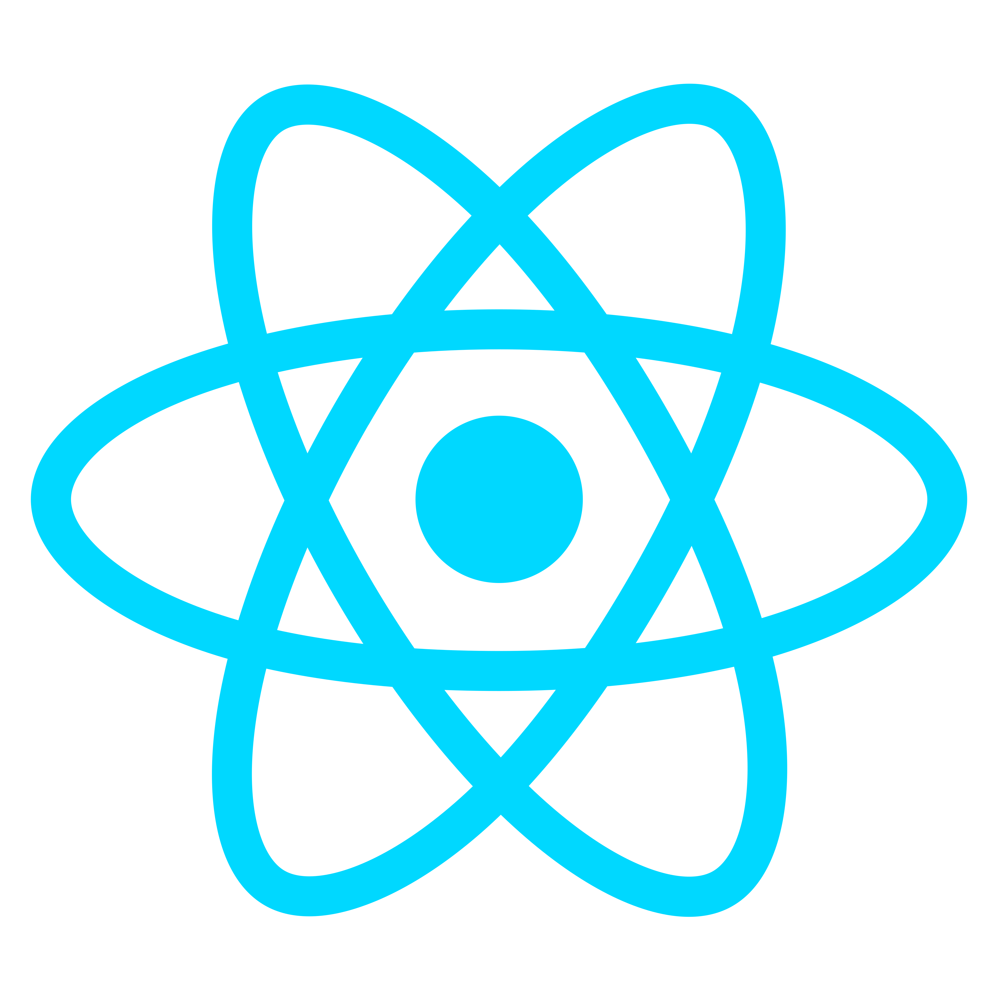
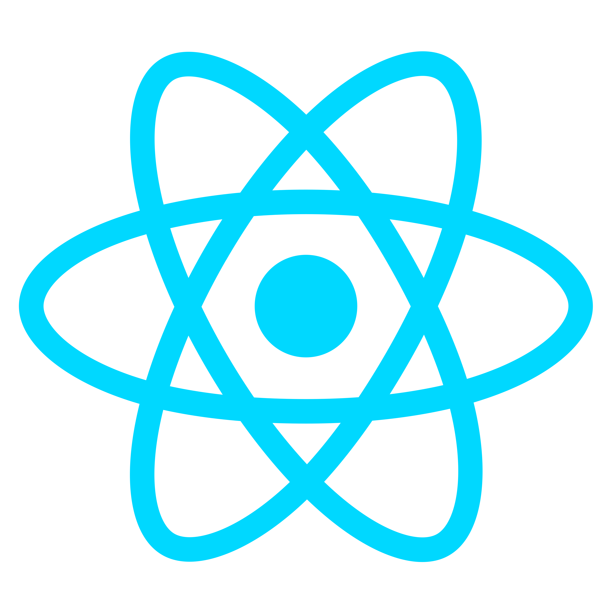
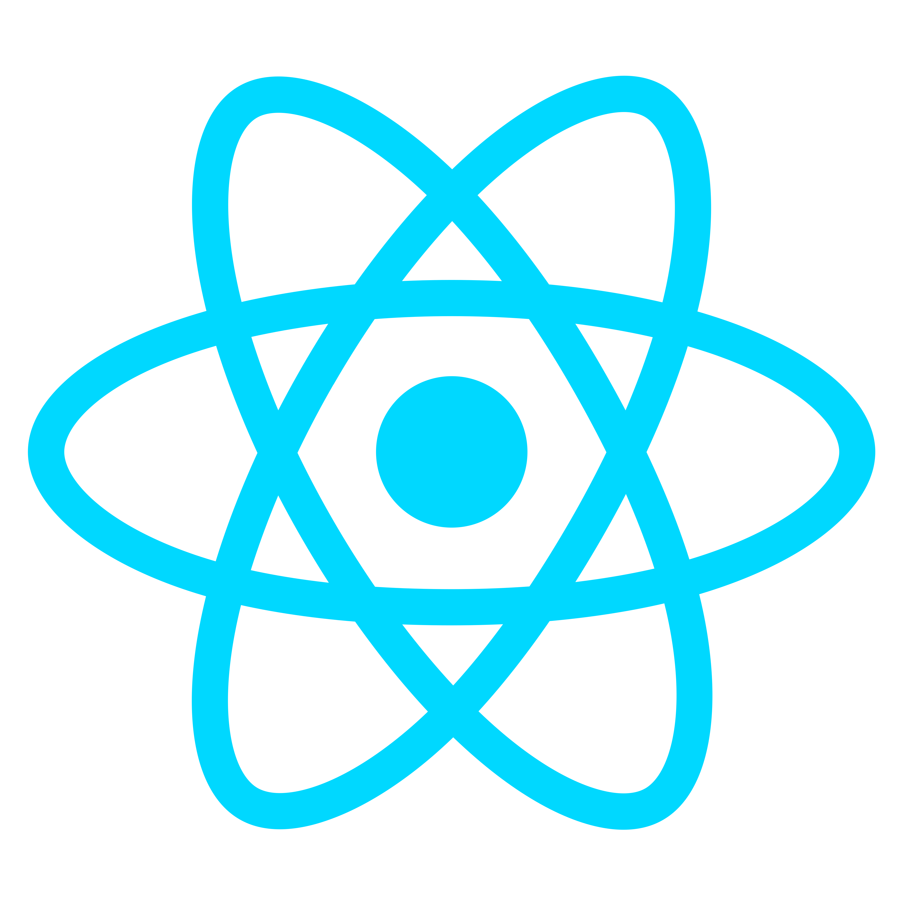

Bachelor's of Computer Application
August 2023 - present
I am currently pursuing my Bachelor's degree in Computer Applications (BCA) from a reputed institution affiliated with Dr. A.P.J. Abdul Kalam Technical University. My academic journey has equipped me with a solid foundation in programming, web development, and software engineering principles. Through hands-on projects and coursework, I’ve developed skills in both frontend and backend technologies, which I continue to refine through real-world applications and personal projects.
12th standard
April 2022 - May 2023
I completed my Senior Secondary (12th standard) education with a focus on Computer Science and Mathematics. This phase helped me build a strong analytical mindset and laid the groundwork for my interest in programming and technology. The exposure to logical reasoning, basic coding concepts, and structured problem-solving played a key role in shaping my academic and career direction toward software development.
Backend Intern
june 2025 - july 2025
I completed a one-month internship as a Backend Developer at a growing IT services company. During this time, I gained practical experience working on real-world projects, focusing primarily on server-side development, API integration, and database management. I collaborated closely with senior developers, which helped me strengthen my understanding of backend technologies and improve my problem-solving skills in a production environment.